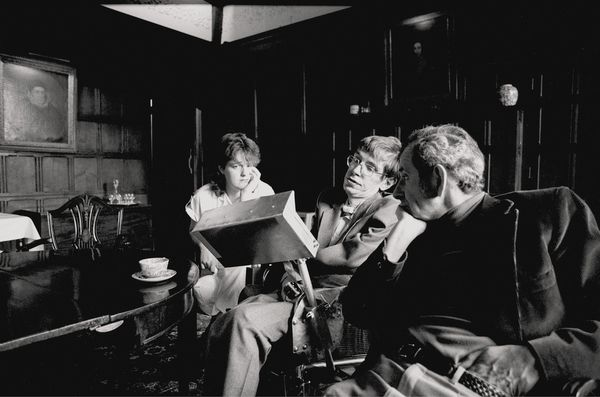

Professor Stephen William Hawking
Cosmologist, space traveller and hero

Stephen Hawking and colleagues at the University of Cambridge in the 1980s, before the publication of A Brief History of Time
Key dates in Professor Hawking's Life:
- 1942 -Born in Oxford, England
- 1959 -Specialises in physics at University College Oxford. Graduates with a first class degree in natural sciences
- 1963 -Begins research in cosmology and general relativity at the University of Cambridge. He is diagnosed with an "incurable disease" at the age of 21, which is later found to be Amyotrophic Lateral Sclerosis, a rare progressive disease that effects movement and speech. He continues with his research
- 1966 -Completes his doctorate and is awarded a fellowship at Gonville and Caius College, Cambridge
- 1970 -Discovers a remarkable property: by using quantum theory and general relativity he is able to show that black holes can emit radiation
- 1973 -Discovers that black holes could leak energy and particles into space, and even explode in a fountain of high-energy sparks
- 1974 -His breakthrough discovery is published in the journal Nature, in a paper entitled Black hole Explosion
- 1982 -Awarded a CBE by the Queen
- 1988 -Publishes A Brief History of Time: From the Big Bang to Black Holes, a classic introduction to today's most important scientific ideas about the cosmos. Recorded in the 1998 Guinness Book of Records as an all-time bestseller
- 1989 -Made a companion of honour
- 1993 -Publishes Black Holes and Baby Universes, and other Essays, a collection of scientific articles exploring ways in which the universe may be governed
- 1998 -Publishes Stephen Hawking's Universe: The Cosmos Explained, a book about the basis of our existence and of everything around us
- 2001 -Releases Universe in a Nutshell in the UK, a book that unravels the mysteries of recent breakthroughs in physics.
- 2002 -Publishes The Theory of Everything: The Origin and Fate of the Universe, a book that presents the most complex theories of physics past and present
- 2014 -Hawking announces that he has solved the Black Hole paradox, which has been a troubling scientists for years
- 2018 -Dies at the age of 76